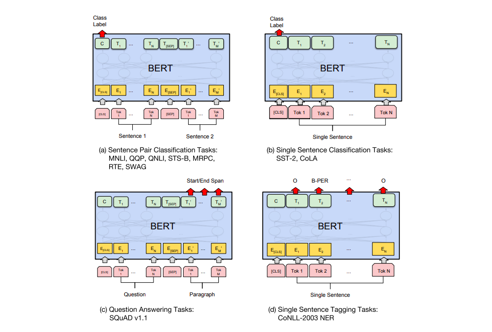
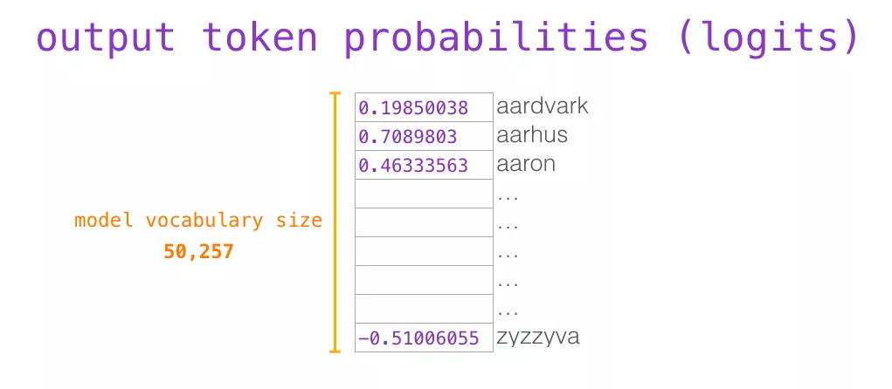
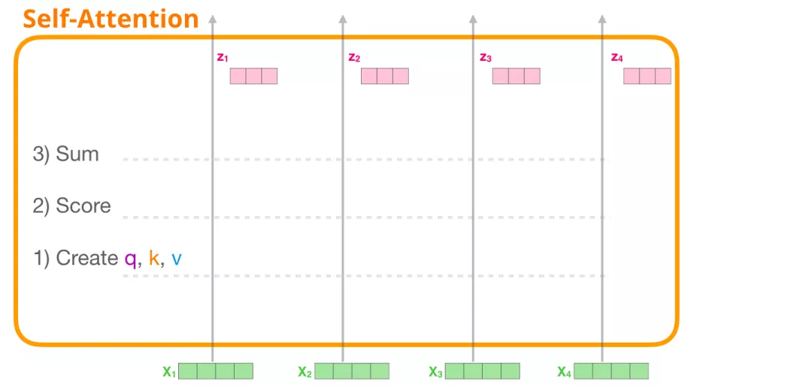
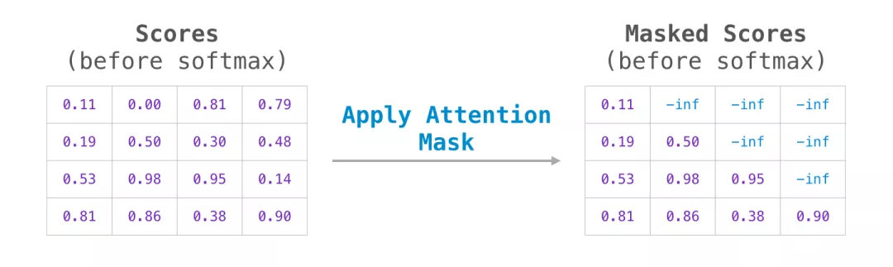
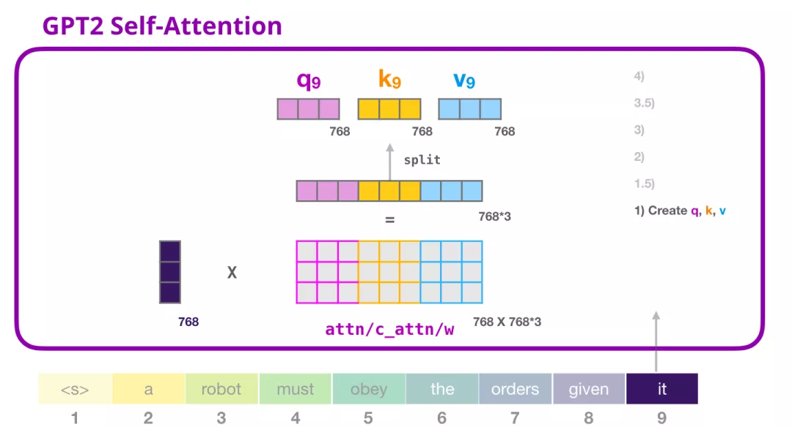
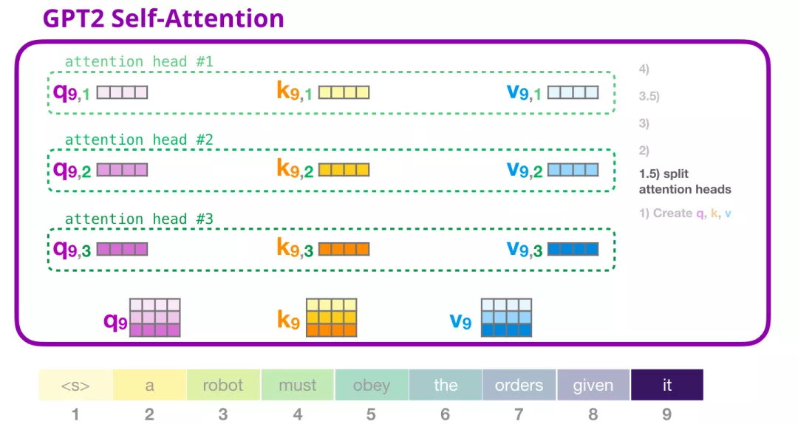
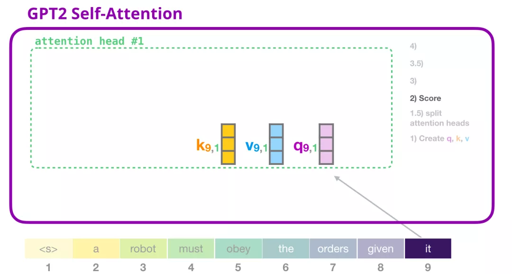
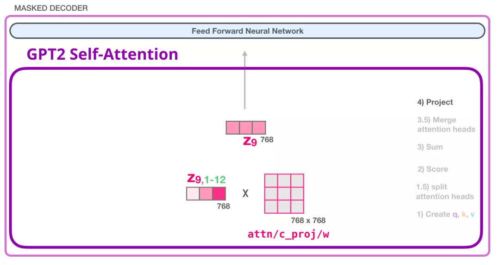
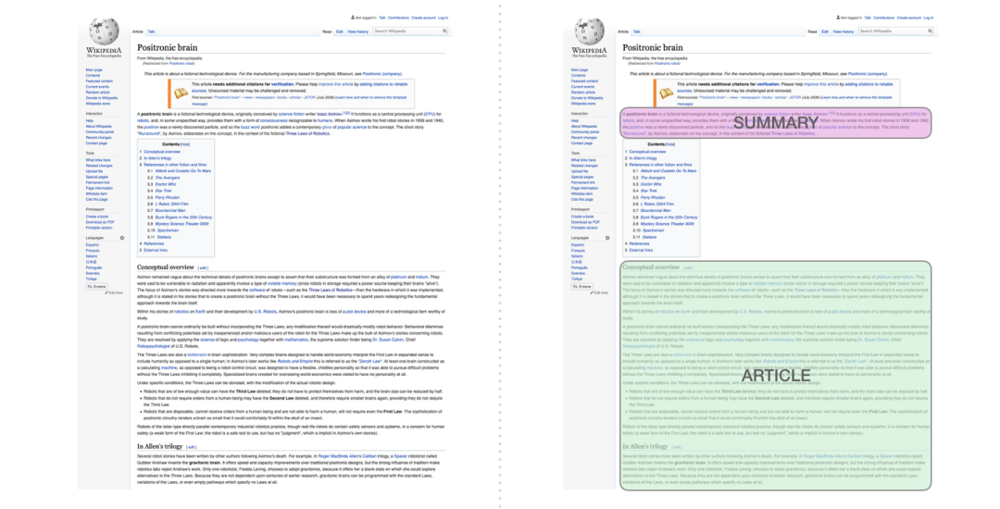
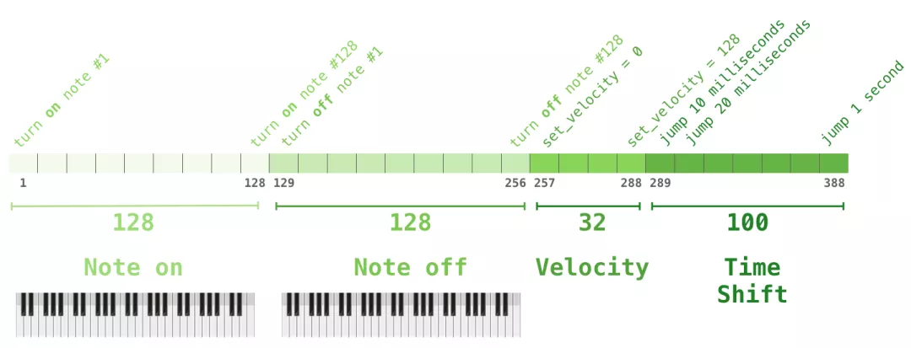

author：TongMing
Datawhale 开源学习地址：https://github.com/datawhalechina/learn-nlp-with-transformers
个人总结
预训练：根据MASK的方式进行自监督的学习，
微调：结合监督信息进行半监督的学习
BERT是transformer的encoder部分
ELMo可以表示不同语境下的“多义词”
图解BERT（精华）
前言
BERT 开发的两个步骤：第 1 步，你可以下载预训练好的模型（这个模型是在无标注的数据上训练的）。然后在第 2 步只需要关心模型微调即可。
句子分类
使用 BERT 最直接的方法就是对一个句子进行分类。这个模型如下所示：
 图：BERT句子分类
图：BERT句子分类
为了训练这样一个模型，你主要需要训练分类器（上图中的 Classifier），在训练过程中 几乎不用改动BERT模型。这个训练过程称为微调，它起源于Semi-supervised Sequence Learning 和 ULMFiT。
其他例子还包括：预测语义分析和断言
模型架构
论文里介绍了两种不同模型大小的 BERT：
- BERT BASE - 与 OpenAI 的 Transformer 大小相当，以便比较性能
- BERT LARGE - 一个非常巨大的模型，它取得了最先进的结果
2 种不同大小规模的 BERT 模型都有大量的 Encoder 层（论文里把这些层称为 Transformer Blocks）- BASE 版本由 12 层 Encoder，Large 版本有 20 层 Encoder。同时，这些 BERT 模型也有更大的前馈神经网络（分别有 768 个和 1024 个隐藏层单元）和更多的 attention heads（分别有 12 个和 16 个），超过了原始 Transformer 论文中的默认配置参数（原论文中有 6 个 Encoder 层， 512 个隐藏层单元和 8 个 attention heads）。
模型输入
图：模型输入
第一个输入的 token 是特殊的 [CLS]，它 的含义是分类（class的缩写）。
就像 Transformer 中普通的 Encoder 一样，BERT 将一串单词作为输入，这些单词在 Encoder 的栈中不断向上流动。每一层都会经过 Self Attention 层，并通过一个前馈神经网络，然后将结果传给下一个 Encoder。
 图：BERT encoder
图：BERT encoder
在模型架构方面，到目前为止，和 Transformer 是相同的（除了模型大小，因为这是我们可以改变的参数）。我们会在下面看到，BERT 和 Transformer 在模型的输出上有一些不同。
模型输出
每个位置输出一个大小为 hidden_size（在 BERT Base 中是 768）的向量。对于上面提到的句子分类的例子，我们只关注第一个位置的输出（输入是 [CLS] 的那个位置）。
 图：BERT output
图：BERT output
这个输出的向量现在可以作为后面分类器的输入。论文里用单层神经网络作为分类器，取得了很好的效果。
图：BERT 接分类器
如果你有更多标签（例如你是一个电子邮件服务，需要将邮件标记为 “垃圾邮件”、“非垃圾邮件”、“社交”、“推广”），你只需要调整分类器的神经网络，增加输出的神经元个数，然后经过 softmax 即可。
与卷积神经网络进行对比
对于那些有计算机视觉背景的人来说，这个向量传递过程，会让人联想到 VGGNet 等网络的卷积部分，和网络最后的全连接分类部分之间的过程。
图：CNN
词嵌入（Embedding）的新时代
上面提到的这些新发展带来了文本编码方式的新转变。到目前为止，词嵌入一直是 NLP 模型处理语言的主要表示方法。像 Word2Vec 和 Glove 这样的方法已经被广泛应用于此类任务。在我们讨论新的方法之前，让我们回顾一下它们是如何应用的。
回顾词嵌入
单词不能直接输入机器学习模型，而需要某种数值表示形式，以便模型能够在计算中使用。通过 Word2Vec，我们可以使用一个向量（一组数字）来恰当地表示单词，并捕捉单词的语义以及单词和单词之间的关系（例如，判断单词是否相似或者相反，或者像 “Stockholm” 和 “Sweden” 这样的一对词，与 “Cairo” 和 “Egypt”这一对词，是否有同样的关系）以及句法、语法关系（例如，”had” 和 “has” 之间的关系与 “was” 和 “is” 之间的关系相同）。
人们很快意识到，相比于在小规模数据集上和模型一起训练词嵌入，更好的一种做法是，在大规模文本数据上预训练好词嵌入，然后拿来使用。因此，我们可以下载由 Word2Vec 和 GloVe 预训练好的单词列表，及其词嵌入。下面是单词 “stick” 的 Glove 词嵌入向量的例子（词嵌入向量长度是 200）。
 图： wrod vector
图： wrod vector
单词 “stick” 的 Glove 词嵌入 - 一个由200个浮点数组成的向量（四舍五入到小数点后两位）。
语境问题
如果我们使用 Glove 的词嵌入表示方法，那么不管上下文是什么，单词 “stick” 都只表示为同一个向量。一些研究人员指出，像 “stick” 这样的词有多种含义。为什么不能根据它使用的上下文来学习对应的词嵌入呢？这样既能捕捉单词的语义信息，又能捕捉上下文的语义信息。于是，语境化的词嵌入模型应运而生。 图：ELMO
图：ELMO
语境化的词嵌入，可以根据单词在句子语境中的含义，赋予不同的词嵌入。你可以查看这个视频 RIP Robin Williams（https://zhuanlan.zhihu.com/RIP Robin Williams）
ELMo 没有对每个单词使用固定的词嵌入，而是在为每个词分配词嵌入之前，查看整个句子，融合上下文信息。它使用在特定任务上经过训练的双向 LSTM 来创建这些词嵌入。
ELMo 在语境化的预训练这条道路上迈出了重要的一步。ELMo LSTM 会在一个大规模的数据集上进行训练，然后我们可以将它作为其他语言处理模型的一个部分，来处理自然语言任务。
那么 ELMo 的秘密是什么呢？
ELMo 通过训练，预测单词序列中的下一个词，从而获得了语言理解能力，这项任务被称为语言建模。要实现 ELMo 很方便，因为我们有大量文本数据，模型可以从这些数据中学习，而不需要额外的标签。
 图： ELMO 训练
图： ELMO 训练
ELMo 预训练过程的其中一个步骤：以 “Let’s stick to” 作为输入，预测下一个最有可能的单词。这是一个语言建模任务。当我们在大规模数据集上训练时，模型开始学习语言的模式。例如，在 “hang” 这样的词之后，模型将会赋予 “out” 更高的概率（因为 “hang out” 是一个词组），而不是 “camera”。
在上图中，我们可以看到 ELMo 头部上方展示了 LSTM 的每一步的隐藏层状态向量。在这个预训练过程完成后，这些隐藏层状态在词嵌入过程中派上用场。
 图：ELMO 训练
图：ELMO 训练
ELMo 通过将隐藏层状态（以及初始化的词嵌入）以某种方式（向量拼接之后加权求和）结合在一起，实现了带有语境化的词嵌入。
 图：ELMO 训练
图：ELMO 训练
ULM-FiT：NLP 领域的迁移学习
ULM-FiT 提出了一些方法来有效地利用模型在预训练期间学习到的东西 - 这些东西不仅仅是词嵌入，还有语境化的词嵌入。ULM-FiT 提出了一个语言模型和一套流程，可以有效地为各种任务微调这个语言模型。
现在，NLP 可能终于找到了好的方法，可以像计算机视觉那样进行迁移学习了。
Transformer：超越 LSTM
Transformer 论文和代码的发布，以及它在机器翻译等任务上取得的成果，开始让人们认为它是 LSTM 的替代品。这是因为 Transformer 可以比 LSTM 更好地处理长期依赖。
Transformer 的 Encoder-Decoder 结构使得它非常适合机器翻译。但你怎么才能用它来做文本分类呢？你怎么才能使用它来预训练一个语言模型，并能够在其他任务上进行微调（下游任务是指那些能够利用预训练模型的监督学习任务）？
OpenAI Transformer：预训练一个 Transformer Decoder 来进行语言建模
事实证明，我们不需要一个完整的 Transformer 来进行迁移学习和微调。我们只需要 Transformer 的 Decoder 就可以了。Decoder 是一个很好的选择，用它来做语言建模（预测下一个词）是很自然的，因为它可以屏蔽后来的词 。当你使用它进行逐词翻译时，这是个很有用的特性。
图： open ai模型
OpenAI Transformer 是由 Transformer 的 Decoder 堆叠而成的
这个模型包括 12 个 Decoder 层。因为在这种设计中没有 Encoder，这些 Decoder 层不会像普通的 Transformer 中的 Decoder 层那样有 Encoder-Decoder Attention 子层。不过，它仍然会有 Self Attention 层（这些层使用了 mask，因此不会看到句子后来的 token）。
 图： open ai模型预测下一个词
图： open ai模型预测下一个词
上图表示：OpenAI Transformer 在 7000 本书的组成的数据集中预测下一个单词。
下游任务的迁移学习
现在，OpenAI Transformer 已经经过了预训练，它的网络层经过调整，可以很好地处理文本语言，我们可以开始使用它来处理下游任务。让我们先看下句子分类任务（把电子邮件分类为 ”垃圾邮件“ 或者 ”非垃圾邮件“）：
 图： open ai模型下游任务
图： open ai模型下游任务
下面这张图片来源于论文，展示了执行不同任务的模型结构和对应输入变换。这些都是非常很巧妙的做法。
 图： open ai微调
图： open ai微调
BERT：从 Decoder 到 Encoder
OpenAI Transformer 为我们提供了一个基于 Transformer 的可以微调的预训练网络。但是在把 LSTM 换成 Transformer 的过程中，有些东西丢失了。ELMo 的语言模型是双向的，但 OpenAI Transformer 只训练了一个前向的语言模型。我们是否可以构建一个基于 Transformer 的语言模型，它既向前看，又向后看（用技术术语来说 - 融合上文和下文的信息）。
？？？？decoder中没有前后向的attention吗？
Masked Language Model（MLM 语言模型）
那么如何才能像 LSTM 那样，融合上文和下文的双向信息呢？
一种直观的想法是使用 Transformer 的 Encoder。但是 Encoder 的 Self Attention 层，每个 token 会把大部分注意力集中到自己身上，那么这样将容易预测到每个 token，模型学不到有用的信息。BERT 提出使用 mask，把需要预测的词屏蔽掉。
下面这段风趣的对话是博客原文的。
1 | BERT 说，“我们要用 Transformer 的 Encoder”。 |
 图： BERT mask
图： BERT mask
BERT 在语言建模任务中，巧妙地屏蔽了输入中 15% 的单词，并让模型预测这些屏蔽位置的单词。
找到合适的任务来训练一个 Transformer 的 Encoder 是一个复杂的问题，BERT 通过使用早期文献中的 “masked language model” 概念（在这里被称为完形填空）来解决这个问题。
除了屏蔽输入中 15% 的单词外， BERT 还混合使用了其他的一些技巧，来改进模型的微调方式。例如，有时它会随机地用一个词替换另一个词，然后让模型预测这个位置原来的实际单词。
图： BERT mask
BERT 在语言建模任务中，巧妙地屏蔽了输入中 15% 的单词，并让模型预测这些屏蔽位置的单词。
找到合适的任务来训练一个 Transformer 的 Encoder 是一个复杂的问题，BERT 通过使用早期文献中的 “masked language model” 概念（在这里被称为完形填空）来解决这个问题。
除了屏蔽输入中 15% 的单词外， BERT 还混合使用了其他的一些技巧，来改进模型的微调方式。例如，有时它会随机地用一个词替换另一个词，然后让模型预测这个位置原来的实际单词。
两个句子的任务
如果你回顾 OpenAI Transformer 在处理不同任务时所做的输入变换，你会注意到有些任务需要模型对两个句子的信息做一些处理（例如，判断它们是不是同一句话的不同解释。将一个维基百科条目作为输入，再将一个相关的问题作为另一个输入，模型判断是否可以回答这个问题）。
为了让 BERT 更好地处理多个句子之间的关系，预训练过程还包括一个额外的任务：给出两个句子（A 和 B），判断 B 是否是 A 后面的相邻句子。
 图： 2个句子任务
图： 2个句子任务
BERT 预训练的第 2 个任务是两个句子的分类任务。在上图中，tokenization 这一步被简化了，因为 BERT 实际上使用了 WordPieces 作为 token，而不是使用单词本身。在 WordPiece 中，有些词会被拆分成更小的部分。
BERT 在不同任务上的应用
BERT 的论文展示了 BERT 在多种任务上的应用。
图： BERT应用
将 BERT 用于特征提取
使用 BERT 并不是只有微调这一种方法。就像 ELMo 一样，你可以使用预训练的 BERT 来创建语境化的word embedding。然后你可以把这些word embedding用到你现有的模型中。论文里也提到，这种方法在命名实体识别任务中的效果，接近于微调 BERT 模型的效果。
 图： BERT特征提取
图： BERT特征提取
那么哪种向量最适合作为上下文词嵌入？我认为这取决于任务。论文里验证了 6 种选择（与微调后的 96.4 分的模型相比）：
 图： BERT特征选择
图： BERT特征选择
？？？？
如何使用 BERT
将在篇章3中进行更为详细的讲解。
尝试 BERT 的最佳方式是通过托管在 Google Colab 上的 BERT FineTuning with Cloud TPUs。如果你之前从来没有使用过 Cloud TPU，那这也是一个很好的尝试开端，因为 BERT 代码可以运行在 TPU、CPU 和 GPU。
下一步是查看 BERT 仓库 中的代码：
- 模型是在 modeling.py（class BertModel）中定义的，和普通的 Transformer encoder 完全相同。
- run_classifier.py 是微调网络的一个示例。它还构建了监督模型分类层。如果你想构建自己的- 分类器，请查看这个文件中的 create_model() 方法。
- 可以下载一些预训练好的模型。这些模型包括 BERT Base、BERT Large，以及英语、中文和包括 102 种语言的多语言模型，这些模型都是在维基百科的数据上进行训练的。
- BERT 不会将单词作为 token。相反，它关注的是 WordPiece。tokenization.py 就是 tokenizer，它会将你的单词转换为适合 BERT 的 wordPiece。
致谢
主要由哈尔滨工业大学张贤同学翻译（经过原作者授权）撰写，由本项目同学组织和整理。感谢Jacob Devlin、Matt Gardner、Kenton Lee、Mark Neumann 和 Matthew Peters 为这篇文章的早期版本提供了反馈
图解GPT
最著名的语言模型就是手机键盘，它可以根据你输入的内容，提示下一个单词。
图：gpt-bert
我们可以将这些模块堆得多高呢？事实证明，这是区分不同的 GPT-2 的主要因素之一。
 图：gpt区分
图：gpt区分
与 BERT 的一个不同之处
1 | 机器人第一定律： |
GPT-2 是使用 Transformer 的 Decoder 模块构建的。另一方面，BERT 是使用 Transformer 的 Encoder 模块构建的。我们将在下一节中研究这种差异。但它们之间的一个重要差异是，GPT-2 和传统的语言模型一样，一次输出一个 token。例如，让一个训练好的 GPT-2 背诵机器人第一定律：
图： gpt2 output
这些模型的实际工作方式是，在产生每个 token 之后，将这个 token 添加到输入的序列中，形成一个新序列。然后这个新序列成为模型在下一个时间步的输入。这是一种叫“自回归（auto-regression）”的思想。这种做法可以使得 RNN 非常有效。
图： gpt2 output
GPT-2，和后来的一些模型如 TransformerXL 和 XLNet，本质上都是自回归的模型。但 BERT 不是自回归模型。这是一种权衡。去掉了自回归后，BERT 能够整合左右两边的上下文，从而获得更好的结果。XLNet 重新使用了 自回归，同时也找到一种方法能够结合两边的上下文。
Transformer 模块的进化
Transformer 原始论文(https://arxiv.org/abs/1706.03762) 介绍了两种模块：
Encoder 模块
首先是 Encoder 模块。
 图： encoder
图： encoder
原始的 Transformer 论文中的 Encoder 模块接受特定长度的输入（如 512 个 token）。如果一个输入序列比这个限制短，我们可以填充序列的其余部分。
Decoder 模块
其次是 Decoder。与 Encoder 相比，它在结构上有一个很小的差异：它有一个层，使得它可以关注来自 Encoder 特定的段。
 图： decoder
图： decoder
这里的 Self Attention 层的一个关键差异是，它会屏蔽未来的 token。具体来说，它不像 BERT 那样将单词改为mask，而是通过改变 Self Attention 的计算，阻止来自被计算位置右边的 token。
例如，我们想要计算位置 4，我们可以看到只允许处理以前和现在的 token。
 图： decoder只能看到以前和现在的token
图： decoder只能看到以前和现在的token
很重要的一点是，（BERT 使用的）Self Attention 和 （GPT-2 使用的）masked Self Attention 有明确的区别。一个正常的 Self Attention 模块允许一个位置关注到它右边的部分。而 masked Self Attention 阻止了这种情况的发生：
 图： mask attention
图： mask attention
只有 Decoder 的模块
在 Transformer 原始论文发布之后，Generating Wikipedia by Summarizing Long Sequences(https://arxiv.org/pdf/1801.10198.pdf) 提出了另一种能够进行语言建模的 Transformer 模块的布局。这个模型丢弃了 Transformer 的 Encoder。因此，我们可以把这个模型称为 Transformer-Decoder。这种早期的基于 Transformer 的语言模型由 6 个 Decoder 模块组成。
图： transformer-decoder
这些 Decoder 模块都是相同的。我已经展开了第一个 Decoder，因此你可以看到它的 Self Attention 层是 masked 的。注意，现在这个模型可以处理多达 4000 个 token–是对原始论文中 512 个 token 的一个大升级。
这些模块和原始的 Decoder 模块非常类似，只是它们去掉了第二个 Self Attention 层。在 Character-Level Language Modeling with Deeper Self-Attention(https://arxiv.org/pdf/1808.04444.pdf) 中使用了类似的结构，来创建一次一个字母/字符的语言模型。
OpenAI 的 GPT-2 使用了这些 Decoder 模块。
语言模型入门：了解 GPT2
让我们拆解一个训练好的 GPT-2，看看它是如何工作的。
 图：拆解GPT2
图：拆解GPT2
GPT-2 能够处理 1024 个 token。每个 token 沿着自己的路径经过所有的 Decoder 模块
运行一个训练好的 GPT-2 模型的最简单的方法是让它自己生成文本（这在技术上称为 生成无条件样本）。或者，我们可以给它一个提示，让它谈论某个主题（即生成交互式条件样本）。在漫无目的情况下，我们可以简单地给它输入初始 token，并让它开始生成单词（训练好的模型使用 <|endoftext|> 作为初始的 token。我们称之为 <s>）。
 图：拆解GPT2初始token
图：拆解GPT2初始token
模型只有一个输入的 token，因此只有一条活跃路径。token 在所有层中依次被处理，然后沿着该路径生成一个向量。这个向量可以根据模型的词汇表计算出一个分数（模型知道所有的 单词，在 GPT-2 中是 5000 个词）。在这个例子中，我们选择了概率最高的 the。但我们可以把事情搞混–你知道如果一直在键盘 app 中选择建议的单词，它有时候会陷入重复的循环中，唯一的出路就是点击第二个或者第三个建议的单词。同样的事情也会发生在这里，GPT-2 有一个 top-k 参数，我们可以使用这个参数，让模型考虑第一个词（top-k =1）之外的其他词。
下一步，我们把第一步的输出添加到我们的输入序列，然后让模型做下一个预测。
 动态图：拆解GPT2
动态图：拆解GPT2
请注意，第二条路径是此计算中唯一活动的路径。GPT-2 的每一层都保留了它自己对第一个 token 的解释，而且会在处理第二个 token 时使用它（我们会在接下来关于 Self Attention 的章节中对此进行更详细的介绍）。GPT-2 不会根据第二个 token 重新计算第一个 token。
深入理解 GPT2 的更多细节
输入编码
让我们更深入地了解模型。首先从输入开始。与之前我们讨论的其他 NLP 模型一样，GPT-2 在嵌入矩阵中查找输入的单词的对应的 embedding 向量–这是我们从训练好的模型中得到的组件之一。
图：token embedding
每一行都是词的 embedding：这是一个数字列表，可以表示一个词并捕获一些含义。这个列表的大小在不同的 GPT-2 模型中是不同的。最小的模型使用的 embedding 大小是 768
因此在开始时，我们会在嵌入矩阵查找第一个 token 的 embedding。在把这个 embedding 传给模型的第一个模块之前，我们需要融入位置编码，这个位置编码能够指示单词在序列中的顺序。训练好的模型中，有一部分是一个矩阵，这个矩阵包括了 1024 个位置中每个位置的位置编码向量。
 图：位置编码
图：位置编码
在这里，我们讨论了输入单词在传递到第一个 Transformer 模块之前，是如何被处理的。我们还知道，训练好的 GPT-2 包括两个权重矩阵。
 图： token+position
图： token+position
把一个单词输入到 Transformer 的第一个模块，意味着寻找这个单词的 embedding，并且添加第一个位置的位置编码向量
在这些层中向上流动
第一个模块现在可以处理 token，首先通过 Self Attention 层，然后通过神经网络层。一旦 Transformer 的第一个模块处理了 token，会得到一个结果向量，这个结果向量会被发送到堆栈的下一个模块处理。每个模块的处理过程都是相同的，不过每个模块都有自己的 Self Attention 和神经网络层。
 图：向上流动
图：向上流动
回顾 Self-Attention
语言严重依赖于上下文。例如，看看下面的第二定律：
1 | 机器人第二定律 |
我在句子中加粗了 3 个部分，这些部分的词是用于指代其他的词。如果不结合它们所指的上下文，就无法理解或者处理这些词。当一个模型处理这个句子，它必须能够知道：
- 它 指的是机器人
- 该命令 指的是这个定律的前面部分，也就是 人给予 它 的命令
- 第一定律 指的是机器人第一定律
这就是 Self Attention 所做的事。它在处理某个词之前，将模型对这个词的相关词和关联词的理解融合起来（并输入到一个神经网络）。它通过对句子片段中每个词的相关性打分，并将这些词的表示向量加权求和。
举个例子，下图顶部模块中的 Self Attention 层在处理单词 it 的时候关注到 a robot。它传递给神经网络的向量，是 3 个单词和它们各自分数相乘再相加的和。
 图：it的attention
图：it的attention
Self-Attention 过程
Self-Attention 沿着句子中每个 token 的路径进行处理，主要组成部分包括 3 个向量。
- Query：Query 向量是当前单词的表示，用于对其他所有单词（使用这些单词的 key 向量）进行评分。我们只关注当前正在处理的 token 的 query 向量。
- Key：Key 向量就像句子中所有单词的标签。它们就是我们在搜索单词时所要匹配的。
- Value：Value 向量是实际的单词表示，一旦我们对每个词的相关性进行了评分，我们需要对这些向量进行加权求和，从而表示当前的词。
 图： query
图： query
一个粗略的类比是把它看作是在一个文件柜里面搜索，Query 向量是一个便签，上面写着你正在研究的主题，而 Key 向量就像是柜子里的文件夹的标签。当你将便签与标签匹配时，我们取出匹配的那些文件夹的内容，这些内容就是 Value 向量。但是你不仅仅是寻找一个 Value 向量，而是在一系列文件夹里寻找一系列 Value 向量。
将 Query 向量与每个文件夹的 Key 向量相乘，会为每个文件夹产生一个分数（从技术上来讲：就是点积后面跟着 softmax）。
图： score
我们将每个 Value 向量乘以对应的分数，然后求和，得到 Self Attention 的输出。
 图：Self Attention 的输出
图：Self Attention 的输出
这些加权的 Value 向量会得到一个向量，它将 50% 的注意力放到单词 robot 上，将 30% 的注意力放到单词 a，将 19% 的注意力放到单词 it。在下文中，我们会更加深入 Self Attention，但现在，首先让我们继续在模型中往上走，直到模型的输出。
模型输出
当模型顶部的模块产生输出向量时（这个向量是经过 Self Attention 层和神经网络层得到的），模型会将这个向量乘以嵌入矩阵。
 图：顶部的模块产生输出
图：顶部的模块产生输出
回忆一下，嵌入矩阵中的每一行都对应于模型词汇表中的一个词。这个相乘的结果，被解释为模型词汇表中每个词的分数。
图：token概率
我们可以选择最高分数的 token（top_k=1）。但如果模型可以同时考虑其他词，那么可以得到更好的结果。所以一个更好的策略是把分数作为单词的概率，从整个列表中选择一个单词（这样分数越高的单词，被选中的几率就越高）。一个折中的选择是把 top_k 设置为 40，让模型考虑得分最高的 40 个词。
 图：top k选择输出
图：top k选择输出
这样，模型就完成了一次迭代，输出一个单词。模型会继续迭代，直到所有的上下文都已经生成（1024 个 token），或者直到输出了表示句子末尾的 token。
GPT2 总结
现在我们基本知道了 GPT-2 是如何工作的。如果你想知道 Self Attention 层里面到底发生了什么，那么文章接下来的额外部分就是为你准备的，我添加这个额外的部分，来使用更多可视化解释 Self Attention，以便更加容易讲解后面的 Transformer 模型（TransformerXL 和 XLNet）。
我想在这里指出文中一些过于简化的说法：
- 我在文中交替使用 token 和 词。但实际上，GPT-2 使用 Byte Pair Encoding 在词汇表中创建 token。这意味着 token 通常是词的一部分。
- 我们展示的例子是在推理模式下运行。这就是为什么它一次只处理一个 token。在训练时，模型将会针对更长的文本序列进行训练，并且同时处理多个 token。同样，在训练时，模型会处理更大的 batch size，而不是推理时使用的大小为 1 的 batch size。
- 为了更加方便地说明原理，我在本文的图片中一般会使用行向量。但有些向量实际上是列向量。在代码实现中，你需要注意这些向量的形式。
- Transformer 使用了大量的层归一化（layer normalization），这一点是很重要的。我们在图解Transformer中已经提及到了一部分这点，但在这篇文章，我们会更加关注 Self Attention。
- 有时我需要更多的框来表示一个向量，例如下面这幅图：
 图：输入与输出维度
图：输入与输出维度
可视化 Self-Attention
在这篇文章的前面，我们使用了这张图片来展示，如何在一个层中使用 Self Attention，这个层正在处理单词 it。
 图：it的attention
图：it的attention
在这一节，我们会详细介绍如何实现这一点。请注意，我们会讲解清楚每个单词都发生了什么。这就是为什么我们会展示大量的单个向量。而实际的代码实现，是通过巨大的矩阵相乘来完成的。但我想把重点放在词汇层面上。
Self-Attention
让我们先看看原始的 Self Attention，它被用在 Encoder 模块中进行计算。让我们看看一个玩具 Transformer，它一次只能处理 4 个 token。
Self-Attention 主要通过 3 个步骤来实现：
- 为每个路径创建 Query、Key、Value 矩阵。
- 对于每个输入的 token，使用它的 Query 向量为所有其他的 Key 向量进行打分。
- 将 Value 向量乘以它们对应的分数后求和。
图：3步
(1) 创建 Query、Key 和 Value 向量
让我们关注第一条路径。我们会使用它的 Query 向量，并比较所有的 Key 向量。这会为每个 Key 向量产生一个分数。Self Attention 的第一步是为每个 token 的路径计算 3 个向量。
 图：第1步
图：第1步
(2) 计算分数
现在我们有了这些向量，我们只对步骤 2 使用 Query 向量和 Value 向量。因为我们关注的是第一个 token 的向量，我们将第一个 token 的 Query 向量和其他所有的 token 的 Key 向量相乘，得到 4 个 token 的分数。
图：第2步
(3) 计算和
我们现在可以将这些分数和 Value 向量相乘。在我们将它们相加后，一个具有高分数的 Value 向量会占据结果向量的很大一部分。
 图：第3步
图：第3步
分数越低，Value 向量就越透明。这是为了说明，乘以一个小的数值会稀释 Value 向量。
如果我们对每个路径都执行相同的操作，我们会得到一个向量，可以表示每个 token，其中包含每个 token 合适的上下文信息。这些向量会输入到 Transformer 模块的下一个子层（前馈神经网络）。
 图：汇总
图：汇总
图解 Masked Self_attention
现在，我们已经了解了 Transformer 的 Self Attention 步骤，现在让我们继续研究 masked Self Attention。Masked Self Attention 和 Self Attention 是相同的，除了第 2 个步骤。假设模型只有 2 个 token 作为输入，我们正在观察（处理）第二个 token。在这种情况下，最后 2 个 token 是被屏蔽（masked）的。所以模型会干扰评分的步骤。它基本上总是把未来的 token 评分为 0，因此模型不能看到未来的词：
 图：masked self attention
图：masked self attention
这个屏蔽（masking）经常用一个矩阵来实现，称为 attention mask。想象一下有 4 个单词的序列（例如，机器人必须遵守命令）。在一个语言建模场景中，这个序列会分为 4 个步骤处理–每个步骤处理一个词（假设现在每个词是一个 token）。由于这些模型是以 batch size 的形式工作的，我们可以假设这个玩具模型的 batch size 为 4，它会将整个序列作（包括 4 个步骤）为一个 batch 处理。
 图：masked 矩阵
图：masked 矩阵
在矩阵的形式中，我们把 Query 矩阵和 Key 矩阵相乘来计算分数。让我们将其可视化如下，不同的是，我们不使用单词，而是使用与格子中单词对应的 Query 矩阵（或者 Key 矩阵）。
 图：Query矩阵
图：Query矩阵
在做完乘法之后，我们加上三角形的 attention mask。它将我们想要屏蔽的单元格设置为负无穷大或者一个非常大的负数（例如 GPT-2 中的 负十亿）：
图：加上attetnion的mask
然后对每一行应用 softmax，会产生实际的分数，我们会将这些分数用于 Self Attention。
图：softmax
这个分数表的含义如下：
- 当模型处理数据集中的第 1 个数据（第 1 行），其中只包含着一个单词 （robot），它将 100% 的注意力集中在这个单词上。
- 当模型处理数据集中的第 2 个数据（第 2 行），其中包含着单词（robot must）。当模型处理单词 must，它将 48% 的注意力集中在 robot，将 52% 的注意力集中在 must。
- 诸如此类，继续处理后面的单词。
GPT2 的 Self-Attention
让我们更详细地了解 GPT-2 的 masked attention。
评价模型：每次处理一个 token
我们可以让 GPT-2 像 mask Self Attention 一样工作。但是在评价模型时，当我们的模型在每次迭代后只添加一个新词，那么对于已经处理过的 token 来说，沿着之前的路径重新计算 Self Attention 是低效的。
在这种情况下，我们处理第一个 token（现在暂时忽略 <s>）。
 图：gpt2第一个token
图：gpt2第一个token
GPT-2 保存 token a 的 Key 向量和 Value 向量。每个 Self Attention 层都持有这个 token 对应的 Key 向量和 Value 向量：
图：gpt2的词a
现在在下一个迭代，当模型处理单词 robot，它不需要生成 token a 的 Query、Value 以及 Key 向量。它只需要重新使用第一次迭代中保存的对应向量：
 图：gpt2的词robot
图：gpt2的词robot
(1) 创建 Query、Key 和 Value 矩阵
让我们假设模型正在处理单词 it。如果我们讨论最下面的模块（对于最下面的模块来说），这个 token 对应的输入就是 it 的 embedding 加上第 9 个位置的位置编码：
 图：处理it
图：处理it
Transformer 中每个模块都有它自己的权重（在后文中会拆解展示）。我们首先遇到的权重矩阵是用于创建 Query、Key、和 Value 向量的。
 图：处理it
图：处理it
Self-Attention 将它的输入乘以权重矩阵（并添加一个 bias 向量，此处没有画出)
这个相乘会得到一个向量，这个向量基本上是 Query、Key 和 Value 向量的拼接。
图：处理it
将输入向量与 attention 权重向量相乘（并加上一个 bias 向量）得到这个 token 的 Key、Value 和 Query 向量拆分为 attention heads。
在之前的例子中，我们只关注了 Self Attention，忽略了 multi-head 的部分。现在对这个概念做一些讲解是非常有帮助的。Self-attention 在 Q、K、V 向量的不同部分进行了多次计算。拆分 attention heads 只是把一个长向量变为矩阵。小的 GPT-2 有 12 个 attention heads，因此这将是变换后的矩阵的第一个维度：
 图：处理it
图：处理it
在之前的例子中，我们研究了一个 attention head 的内部发生了什么。理解多个 attention-heads 的一种方法，是像下面这样（如果我们只可视化 12 个 attention heads 中的 3 个）：
图：处理it
(2) 评分
我们现在可以继续进行评分，这里我们只关注一个 attention head（其他的 attention head 也是在进行类似的操作）。
图：处理it
现在，这个 token 可以根据其他所有 token 的 Key 向量进行评分（这些 Key 向量是在前面一个迭代中的第一个 attention head 计算得到的）：
 图：
图：
(3) 求和
正如我们之前所看的那样，我们现在将每个 Value 向量乘以对应的分数，然后加起来求和，得到第一个 attention head 的 Self Attention 结果：
 图：
图：
合并 attention heads
我们处理各种注意力的方法是首先把它们连接成一个向量：
 图：处理it
图：处理it
但这个向量还没有准备好发送到下一个子层（向量的长度不对）。我们首先需要把这个隐层状态的巨大向量转换为同质的表示。
(4) 映射（投影）
我们将让模型学习如何将拼接好的 Self Attention 结果转换为前馈神经网络能够处理的形状。在这里，我们使用第二个巨大的权重矩阵，将 attention heads 的结果映射到 Self Attention 子层的输出向量：
 图：映射
图：映射
通过这个，我们产生了一个向量，我们可以把这个向量传给下一层：
图：传给下一层
GPT-2 全连接神经网络
第 1 层
全连接神经网络是用于处理 Self Attention 层的输出，这个输出的表示包含了合适的上下文。全连接神经网络由两层组成。第一层是模型大小的 4 倍（由于 GPT-2 small 是 768，因此这个网络会有3072个神经元）。为什么是四倍？这只是因为这是原始 Transformer 的大小（如果模型的维度是 512，那么全连接神经网络中第一个层的维度是 2048）。这似乎给了 Transformer 足够的表达能力，来处理目前的任务。
 动态图：全连接层
动态图：全连接层
没有展示 bias 向量
第 2 层. 把向量映射到模型的维度
第 2 层把第一层得到的结果映射回模型的维度（在 GPT-2 small 中是 768）。这个相乘的结果是 Transformer 对这个 token 的输出。
 图：全连接层
图：全连接层
没有展示 bias 向量
你完成了！
这就是我们讨论的 Transformer 的最详细的版本！现在，你几乎已经了解了 Transformer 语言模型内部发生了什么。总结一下，我们的输入会遇到下面这些权重矩阵：
 图：
图：
每个模块都有它自己的权重。另一方面，模型只有一个 token embedding 矩阵和一个位置编码矩阵。
 图：总结
图：总结
如果你想查看模型的所有参数，我在这里对它们进行了统计：
 图：总结
图：总结
由于某些原因，它们加起来是 124 M，而不是 117 M。我不确定这是为什么，但这个就是在发布的代码中展示的大小（如果我错了，请纠正我）。
语言模型之外
只有 Decoder 的 Transformer 在语言模型之外一直展现出不错的应用。它已经被成功应用在了许多应用中，我们可以用类似上面的可视化来描述这些成功应用。让我们看看这些应用，作为这篇文章的结尾。
机器翻译
进行机器翻译时，Encoder 不是必须的。我们可以用只有 Decoder 的 Transformer 来解决同样的任务：
 图：翻译
图：翻译
生成摘要
这是第一个只使用 Decoder 的 Transformer 来训练的任务。它被训练用于阅读一篇维基百科的文章（目录前面去掉了开头部分），然后生成摘要。文章的实际开头部分用作训练数据的标签：
图：
论文里针对维基百科的文章对模型进行了训练，因此这个模型能够总结文章，生成摘要：
 图：摘要
图：摘要
迁移学习
在 Sample Efficient Text Summarization Using a Single Pre-Trained Transformer(https://arxiv.org/abs/1905.08836) 中，一个只有 Decoder 的 Transformer 首先在语言模型上进行预训练，然后微调进行生成摘要。结果表明，在数据量有限制时，它比预训练的 Encoder-Decoder Transformer 能够获得更好的结果。
GPT-2 的论文也展示了在语言模型进行预训练的生成摘要的结果。
音乐生成
Music Transformer(https://magenta.tensorflow.org/music-transformer) 论文使用了只有 Decoder 的 Transformer 来生成具有表现力的时序和动态性的音乐。音乐建模 就像语言建模一样，只需要让模型以无监督的方式学习音乐，然后让它采样输出（前面我们称这个为 漫步）。
你可能会好奇在这个场景中，音乐是如何表现的。请记住，语言建模可以把字符、单词、或者单词的一部分（token），表示为向量。在音乐表演中（让我们考虑一下钢琴），我们不仅要表示音符，还要表示速度–衡量钢琴键被按下的力度。
图：音乐生成
一场表演就是一系列的 one-hot 向量。一个 midi 文件可以转换为下面这种格式。论文里使用了下面这种输入序列作为例子：
 图：音乐生成
图：音乐生成
这个输入系列的 one-hot 向量表示如下：
 图：音乐生成
图：音乐生成
我喜欢论文中的音乐 Transformer 展示的一个 Self Attention 的可视化。我在这基础之上添加了一些注释：
 图：音乐生成
图：音乐生成
这段音乐有一个反复出现的三角形轮廓。Query 矩阵位于后面的一个峰值，它注意到前面所有峰值的高音符，以知道音乐的开头。这幅图展示了一个 Query 向量（所有 attention 线的来源）和前面被关注的记忆（那些受到更大的softmax 概率的高亮音符）。attention 线的颜色对应不同的 attention heads，宽度对应于 softmax 概率的权重。
总结
现在，我们结束了 GPT-2 的旅程，以及对其父模型（只有 Decoder 的 Transformer）的探索。我希望你看完这篇文章后，能对 Self Attention 有一个更好的理解，也希望你能对 Transformer 内部发生的事情有更多的理解。
致谢
主要由哈尔滨工业大学张贤同学翻译（经过原作者授权）撰写，由本项目同学组织和整理。